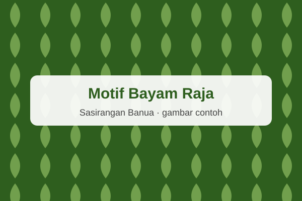
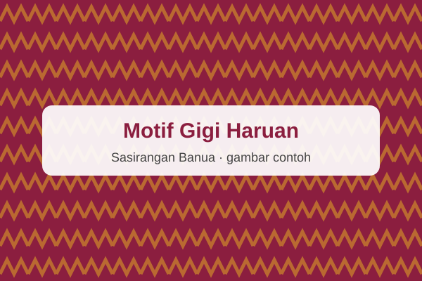
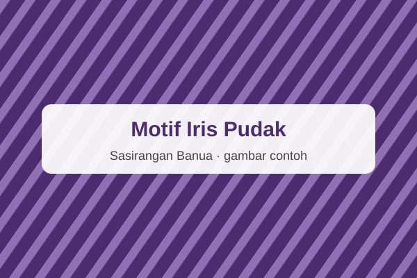
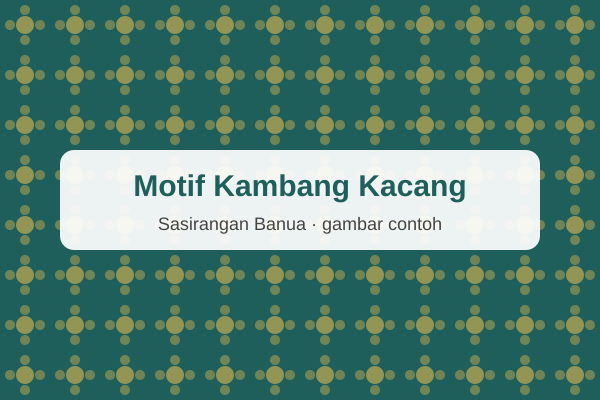
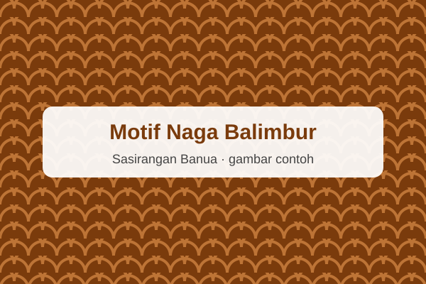
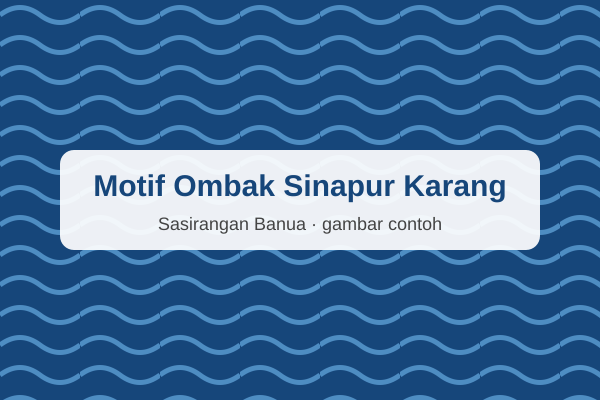

Keindahan Kain Sasirangan Banua
Kenali keunikan kain Sasirangan khas Banjar dengan motif indah dan warna yang memikat.
Lihat KatalogKatalog Motif Kain Sasirangan

Bayam Raja
Kain sasirangan dengan motif bayam raja khas Banjar.
Rp190.000

Gigi Haruan
Kain Katun 2 meter bermotif zig-zag menyerupai gigi ikan haruan.
Rp185.000

Iris Pudak

Kambang Kacang

Naga Balimbur

Ombak Sinapur Karang
Rp150.000